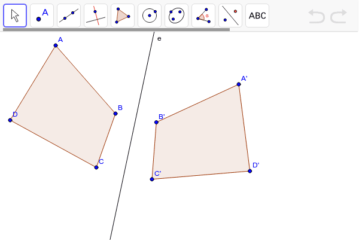
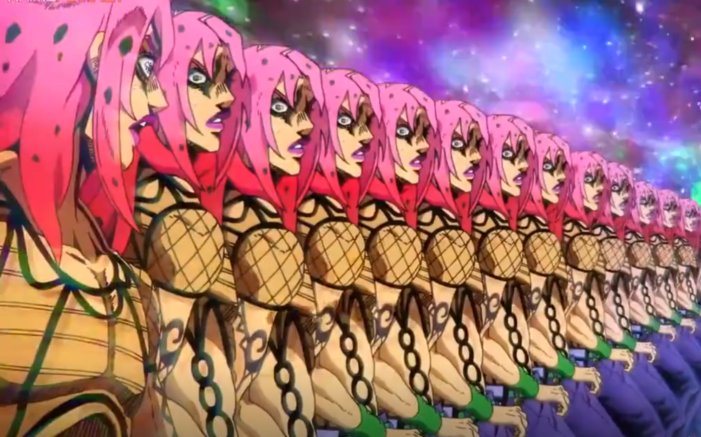
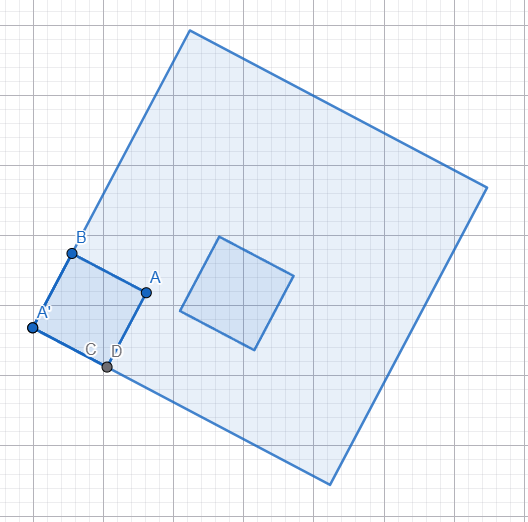
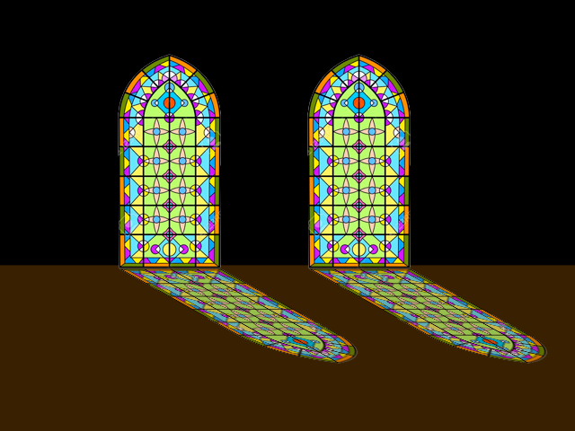

Es un movimiento que desplaza una figura en el plano sin girarla ni cambiar su
tamaño.
Todos los puntos se mueven la misma distancia y dirección.
esto se hace mediante un vector guia [u(x,y)] que indica como se movera la figura

Es el giro de una figura alrededor de un punto fijo llamado centro de rotación.
Puede ser en sentido horario o antihorario.

Es una transformación donde la figura se refleja respecto a una recta
llamada eje de simetría, quedando como una imagen en espejo.

Es una transformación en la que cada punto de la figura se refleja
respecto a un punto fijo, equivalente a una rotación de 180 grados.

Es una transformación que cambia el tamaño de una figura (la agranda o reduce)
manteniendo su forma mediante un factor de escala. (en este caso 4)

Es una deformación intencional de la figura que solo se ve
correctamente desde cierto ángulo o mediante un espejo especial.
